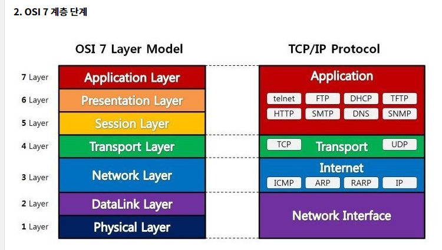

뒤로가기
생성자 method란?
-
클래스를 사용하여 객체(object)선언 후 인스턴스화 할때 호출하는 method
- 생성자 method 는 return type(void,int,String)이 없다
- 클래스 이름과 같다.(첫글자 대문자)
- 클래스를 선언하면 "기본 생성자"는 자동으로 선언된다
- 임의 생성자를 선언하면 기본 생성자를 선언해 주어야 한다
-
6.생성자에서는 인스턴스변수(클래스 영역의 변수)를 초기화 하는 코드가
포함된다.
자바 스크립트는 함수가 객체이다.
자바에서 메소드는 객체가 아니다.
Exception 핸들링 = 오류가나지않게 작성하는것
슈퍼 클래스:자바에있는 모든 클래스는 object 라고 하는 클래스를 상속받는다
"33":문자열형 숫자 33:정수형숫자
ios7계층

-
물리계층(Physical Layer):이 계층에서는 주로 전기적,
기계적, 기능적인 특성을 이용해서 통신 케이블로 데이터를 전송하게
된다.(장비:통신케이블,리피터,허브)이걸통해 데이터를 전송함
-
데이터 링크계층(DataLink Layer):물리계층을 통해
송수신되는 정보의 오류와 흐름을 관리하여 안전한 정보의 전달을 수행할
수 있도록 도와주는 역할을 한다. 따라서 통신에서의 오류도 찾아주고
재전송도 하는 기능을 가지고 있는
것이다.(대표장비:브릿지,스위치)고정주소를 가지고 물리계층에서 받은
정보를 전달함.
-
네트워크 계층(Network Layer):이 계층에서 가장 중요한
기능은 데이터를 목적지까지 가장 안전하고 빠르게 전달하는
기능(라우팅)이다. 여기에 사용되는 프로토콜의 종류도 다양하고,
라우팅하는 기술도 다양하다.라우터가 이 계층에서 동작하고 이 계층에서
동작하는 스위치도 있다.
-
전송 계층(Transport Layer):통신을 활성화하기 위한
계층이다.
보통 TCP프로토콜을 이용하며, 포트를 열어서 응용프로그램들이 전송을 할
수 있게 한다.
-
세션 계층(Session Layer) :데이터가 통신하기 위한
논리적인 연결을 말한다.
-
표현 계층(Presentation Layer):인코딩된 문서 파일을
ASCII로 인코딩된 파일로 바꿔 주는 것, 해당 데이터가 TEXT인지,
그림인지, GIF인지 JPG인지의 구분 등이 표현 계층의 몫이다.
-> 사용자의 명령어를 완성및 결과 표현. 포장/압축/암호화
-
응용 계층(Application Layer):최종 목적지로서 HTTP,
FTP, SMTP, POP3, IMAP, Telnet 등과 같은 프로토콜이 있다.
응용 계층은 응용프로세스와 직접적으로 일반적인 응용 서비스를 수행한다